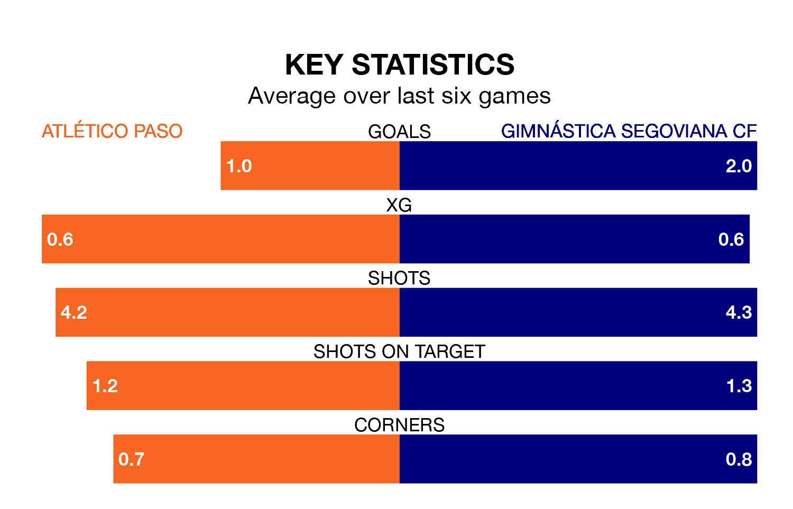

Two of the Segunda División RFEF Group 5's meanest defences go head-to-head on Sunday, when Atlético Paso host Gimnástica Segoviana CF.
No teams have conceded fewer goals than Atlético Paso to date: the home side have let in just 20 goals in 32 games.
Gimnástica Segoviana have conceded 25 goals in 31 games, giving them the joint-third tightest back line so far this season.
Key to Atlético Paso's home form has been Eduardo Loscos Ramos, who has allowed 0.45 goals past him per 90 minutes, compared to 0.86 for Pablo Vicente Carmona in the opposite net.
Gimnástica Segoviana are third in the table after 31 games, of which they have won 15 and drawn 10, earning 55 points.
Atlético Paso are two places behind the away side in fifth, with 13 wins and 11 draws putting them on 50 points.
The hosts are in mixed form in the Segunda División RFEF Group 5, with three wins and a draw from their last six games.
With five wins and one loss over that period, Gimnástica Segoviana's form is better – they have taken 15 points from 18, compared to Atlético Paso's 10.
In the last three years, Atlético Paso and Gimnástica Segoviana have played each other on three occasions. Atlético Paso won one of them and Gimnástica Segoviana the other.
Their last meeting was on December 17, when Gimnástica Segoviana won 2-1 at home.
Atlético Paso's last match was on Sunday, a 2-0 loss against CP Cacereño.
Gimnástica Segoviana beat Llerenense 1-0 last time out, also on Sunday, with Sergi Molina Pagés on the scoresheet.
Updated: 07:59 (UTC), 26/04/24